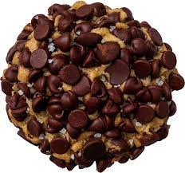

"Copycat Chocolate Chip Cookie Recipe"

Description
Prepare to make a desert only fit for a King. The golen standard, divine intervention in your mouth; The Chocolate Chip Cookie from Gideon's Bakehouse.
Voted the "Best Place in the World to get a Cookie" and "One of the Five Foods You Have to Eat in the U.S. Before you Die..."
by Boston Globe, Trip Advisor, and myself.
Once you eat this cookie you will die... of contentment. You will achieve a state of Nirvana, although temporarily. Kids... feel free to try some at home.
Ingredients
- 1 cup cold salted butter
- 1/2 cup light brown sugar
- 1/2 cup white sugar
- 2 eggs
- 1 1/2 cups cake flour
- 1 1/2 cups bread flour
- 1 teaspoon cornstarch
- 1 teaspoon baking soda
- 1 teaspoon salt
- 2 teaspoons of vanilla
- 6 cups chocolate chips, semi-sweet
- 2 cups of mini chocolate chips
- sea salt (for sprinkling)
Steps
- Preheat your oven to 400 degrees.
- Cream the butter and sugars
for about 5 minutes adding the eggs one at a time.
- Sift the cake and bread flours into a separate bowl.
Add the sifted flours to the batter.
Add the cornstarch, baking soda, vanilla, and salt.
Mix until combined. Be careful not to over mix.
- Incorporate 2 cups of chocolate chips into the dough.
Cover the bowl with plastic wrap.
Chill in the refrigerator for at least 30 minutes.
- Pour 4 cups of chocolate chips into a large bowl and set aside.
Using your hands, shape the chilled dough into large
dough balls.
Cover the entire surface of the dough ball with
chocolate chips. Fill in any gaps with mini-chocolate chips.
- Place twelve dough balls on an ungreased cookie sheet.
Bake for 15 minutes or until golden brown.
- Sprinkle each chocolate chip cookie with sea salt flakes,
to taste. If there are any gaps in the chocolate chips,
fill them in while still hot.
- Assume the stance of a King/Queen.
Draw your sword.
Raise your right-hand pinky and consume while the people watch.